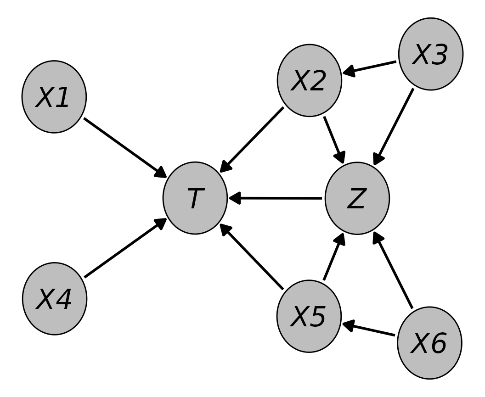

Simulating Complex Crossectional and Longitudinal Data using the simDAG R Package
Robin Denz and Nina Timmesfeld
Source:vignettes/simDAG.Rmd
simDAG.RmdAbstract
This introduction to thesimDAG R
Package is a (slightly) modified version of a provisionally
accepted article in the Journal of Statistical Software.
If you use this package or want to cite information contained in
this article, please cite the arXiv version (Denz and Timmesfeld 2025). Generating artificial data is a crucial step when performing Monte-Carlo simulation studies. Depending on the planned study, complex data generation processes (DGP) containing multiple, possibly time-varying, variables with various forms of dependencies and data types may be required. Simulating data from such DGP may therefore become a difficult and time-consuming endeavor. The
simDAG R package offers a
standardized approach to generate data from simple and complex DGP
based on the definition of structural equations in directed
acyclic graphs using arbitrary functions or regression models. The
package offers a clear syntax with an enhanced formula interface
and directly supports generating binary, categorical, count and
time-to-event data with arbitrary dependencies, possibly
non-linear relationships and interactions. It additionally
includes a framework to conduct discrete-time based simulations
which allows the generation of longitudinal data on a
semi-continuous time-scale. This approach may be used to generate
time-to-event data with both recurrent or competing events and
possibly multiple time-varying covariates, which may themselves
have arbitrary data types. In this article we demonstrate the vast
amount of features included in simDAG by replicating
the DGP of multiple real Monte-Carlo simulation studies. Introduction
Motivation
Applied researchers and statisticians frequently use Monte-Carlo simulation techniques in a variety of ways. They are used to estimate required sample sizes (Arnold et al. 2011), formally compare different statistical methods (Morris, White, and Crowther 2019; Denz, Klaaßen-Mielke, and Timmesfeld 2023), help design and plan clinical trials (Kimko and Duffull 2002; Nance et al. 2024) or for teaching purposes (Sigal and Chalmers 2016; Fox et al. 2022). The main reason for their broad usage is that the researcher has full control over the true data generation process (DGP). In general, the researcher will define a DGP appropriate to the situation and generate multiple datasets from it. Some statistical analysis technique is then applied to each dataset and the results are analyzed. A crucial step in every kind of Monte-Carlo simulation study is thus the generation of these datasets.
Depending on the DGP that is required by the researcher, this step may become very difficult and time consuming. For example, some Monte-Carlo simulations require the generation of complex longitudinal data with variables of different types that are causally related in various ways (Asparouhov and Muthén 2020). Some of these possible data types are continuous variables, categorical variables, count variables or time-to-event variables. All of these require different parametrizations and simulation strategies. If interactions or non-linear relationships between these variables are required, simulating data from the DGP becomes even more challenging.
Generating any artificial data requires (1) a formal description of the DGP, (2) the knowledge of an algorithm that may be used to generate the data from this DGP, and (3) the ability to create a software application to implement that algorithm. Although many statisticians may have no problem with theses steps, this might not be the case for more applied researchers. More importantly, the third step in particular may require a high level of expertise in programming, because the resulting program has to be validated extensively while it also has to be computationally efficient enough to allow potentially thousands of datasets to be generated in a reasonable amount of time. Additionally, it also has to be flexible enough to allow the user to easily make changes to the DGP to be useful in most cases (Sofrygin, van der Laan, and Neugebauer 2017). A comprehensive software application that automates most of the required work would therefore be of great benefit to the scientific community.
In this article we present the simDAG R
package, which offers an easy to use and consistent framework to
generate arbitrarily complex crossectional and longitudinal data. The
aim of the package is to make all three steps of the data generation
process easier by giving users a standardized way to define the desired
DGP, which can then be used directly to generate the data without
further user input. It does so by requiring the user to define a
directed acyclic graph (DAG) with additional information about the
associations between the supplied variables (Pearl 2009). The package was created using the
R programming language (R Core Team
2024) and is available on the Comprehensive R
Archive Network (CRAN) at https://cran.r-project.org/package=simDAG.
Using DAGs to define data generation processes
In this package, the user is required to describe the desired DGP as a causal DAG. Formally, a DAG is a mathematical graph consisting of a set of nodes (or vertices) and a set of edges (or links) connecting pairs of nodes. As its’ name suggests, a DAG consists only of directed edges and is acyclic, meaning that there are no cycles when following directed paths on the DAG (Byeon and Lee 2023). A causal DAG is a special sort of DAG in which the nodes represent random variables and the edges represent directed causal relationships between these variables (Pearl 2009). A very simple example containing only three nodes and no time-dependencies is given in Figure 1. The DAG in this figure contains a directed arrow from to and from to . This translates to the assumptions that there is a direct causal effect of on and of on , but no direct causal relationship between and (due to the absence of an arrow between them).

An example DAG with three nodes.
Such DAGs are the cornerstone of the structural approach to
causal inference developed by Pearl (2009)
and Spirtes, Glymour, and Scheines (2000).
They are used extensively in social research (Wouk, Bauer, and Gottfredson 2019), econonomics
(Imbens 2020) and epidemiology (Byeon and Lee 2023) to encode causal
assumptions about the real underlying DGP of empirical data. For
empirical research such graphs are very useful because they give a clear
overview of the causal assumptions made by the researchers. By using
causal graphical methods such as the backdoor criterion (Pearl 2009) or the frontdoor criterion
(Pearl 1995), it is also possible to use
such graphs to determine which variables need to be adjusted for in
order to get unbiased estimates of certain causal effects. The
daggitty R package directly implements
multiple tools for this kind of usage (Textor et
al. 2016).
These kind of DAGs can be formally described using structural equations. These equations describe how each node is distributed. For example, a general set of structural equations that may be used to describe the DAG in Figure 1 are:
In these equations, the unspecified functions , and describe how exactly the nodes are distributed, possibly conditional on other nodes. The terms , and denote random errors or disturbances. If the functions in these structural equations are not specified and some assumption on the probability distribution of the error terms is made, this is equivalent to a non-parametric structural equation model (Pearl 2009; Sofrygin, van der Laan, and Neugebauer 2017).
To make the generation of data from a DAG possible, however, it is not enough to only specify which variables are causally related to one another. The structural equations now also have to be fully specified. This means that the distribution functions of each node will have to be defined in some way by the user. A popular way to do this is to use regression models and parametric distributions (Kline 2023), but in theory any kind of function may be used, allowing the definition of arbitrarily complex DGPs. Continuing the example from above, we could define the structural equations of the DAG as follows:
This means that both and are independent standard normally distributed variables and that follows a simple linear regression model based on and with an independent normally distributed error term with mean zero. Once all structural equations and distribution functions have been defined, data may be generated from the DAG using a fairly simple algorithm. This algorithm essentially generates data for one node at a time, using only the supplied definitions and the data generated in previous steps. This step-wise method relies on the fact that every DAG can be topologically sorted, which means that there is always an ordering of the nodes such that for every link between nodes and , comes before (Kahn 1962).
The generation of the data starts by ordering the nodes of the graph in such a topologically sorted way. This means that nodes in the DAG that have no arrows pointing into them, sometimes called root nodes, are processed first. Data for these kinds of nodes can be generated by sampling from a pre-specified parametric distribution, such as a Gaussian distribution or a beta distribution, or through any other process, such as re-sampling based strategies (Carsey and Harden 2014). Once data for these nodes has been generated, the data for the next node in the topological order will be generated, based on the already generated data. These nodes are called child nodes, because they are dependent on other nodes, which are called their parent nodes (Byeon and Lee 2023). For the example DAG shown earlier, the two possible topological sortings are:
Here, both
and
are root nodes because they do not have any parents and
is a child node of both of its’ parents
and
.
To generate data for this example using the algorithm described above,
one would first generate
random draws from a standard normal distribution for both
and
.
Next, one would calculate the linear combination of these values as
specified by the linear regression model in the earlier Equation and add
random draws from another standard normal distribution to it (which
represents the error term). In R, this simple example could
be simulated using the following code:
set.seed(43)
n <- 100
A <- stats::rnorm(n)
B <- stats::rnorm(n)
C <- -2 + A*0.3 + B*-2 + stats::rnorm(n)Although the manual code required for this example is fairly simple,
this is no longer the case in DAGs with more nodes and/or a more complex
DGP (for example one including different data types). The
simDAG package offers a standardized way to define any
possible DAG and the required distribution functions to facilitate a
clear and reproducible workflow.
The previous explanations and the given example focused on the simple case of crossectional data without any time-dependencies. It is, however, fairly straightforward to include a time-varying structure into any DAG as well by simply adding a time-index to the time-varying nodes and repeating the node for each point in time that should be considered (Hernán and Robins 2020). The proposed package features computationally efficient functions to automate this process for large amounts of time-points using a discrete-time simulation approach (Tang, Leu, and Abbass 2020). Although this procedure relies on a discrete time scale, it can be used to generate data on a semi-continuous time-scale by using very small steps in time. This is described in more detail in a later Section.
Note also that while causal DAGs imply a specific causal structure, the algorithms and code described here do not necessitate that this causal structure has to be interpreted as such in the generated data. For example, the structural equations shown earlier state that and are direct causes of , but the datasets that can be generated from these equations could also be interpreted as and being only associated with for unknown reasons. As long as the desired DGP can be described as a DAG, which is almost always the case, this strategy may be used effectively to generate data even for Monte-Carlo studies not concerned with causal inference.
Although the data-generation algorithm described above is appropriate for most applications, it may not be the best choice for validating causal discovery methods, due to the marginal variance of each variable increasing along the order of the topological sorting (Reisach, Seiler, and Weichwald 2021). Other methods, such as the onion method proposed by Andrews and Kummerfeld (2024) may be preferable in this particular case.
Comparison with existing software
There are many different software packages that may be used to
generate data in the R programming language and other
languages such as Python. It is infeasible to summarise all
of them here, so we will only focus on a few that offer functionality
similar to the simDAG package instead. The following review
is therefore not intended to be exhaustive. We merely aim to show how
the existing software differs from the proposed package.
Multiple R packages support the generation of synthetic
data from fully specified structural equation models. The
lavaan package (Rosseel
2012), the semTools package (Jorgensen et al. 2022) and the
simsem package (Pornprasertmanit et
al. 2021) are a few examples. However, these packages focus soley
on structural equation models with linear relationships and as such do
not allow the generation of data with different data types. For example,
none of these packages allow the generation of time-to-event data, which
is a type of data that is often needed in simulation studies.
Specialized R packages such as the survsim
(Moriña and Navarro 2017),
simsurv (Brilleman et al.
2021), rsurv (Demarqui
2024) and reda (Wang et al.
2022) packages may be used to simulate such data instead.
Although some of these packages allow generation of recurrent events,
competing events and general multi-state time-to-event data, unlike the
simDAG package, none of them support arbitrary mixtures of
these data types or time-varying covariates.
Other packages, such as the simPop package (Templ et al. 2017) and the
simFrame package (Alfons, Templ, and
Filzmoser 2010) allow generation of more complex synthetic data
structures as well, but are mostly focused on generating data that
mimicks real datasets. Similarly, the simtrial package
offers very flexible tools for the generation of randomized controlled
trial data, but it would be difficult to use it to generate other data
types. Software directly based on causal DAGs as DGPs also exists.
Although it is not stated in the package documentation directly, the
simstudy package (Goldfeld and
Wujciak-Jens 2020) also relies on the DAG based algorithm
described earlier. It supports the use of different data types and
custom generation functions, but only has partial support for generation
of longitudinal data. Alternatively, the Python library
DagSim (Hajj, Pensar, and Sandve
2023) allows users to generate arbitrary forms of data, while
also allowing the user to supply custom functions for the data
generation process. The price for this flexibility is, however, that not
many default options are implemented in the library.
Finally, the simcausal R package (Sofrygin, van der Laan, and Neugebauer 2017) is
very similar to the simDAG package and was in fact a big
inspiration for it. Like the simDAG package, it is also
based on the causal DAG framework. The syntax for defining a DAG is
nearly the same, with some differences in how formula objects can and
should be specified. Unlike the proposed package, however, the
simcausal package is focused mostly on generating data for
simulation studies dealing with causal inference. As such, it also
directly supports the generation of data after performing some
interventions on the DAG (Pearl 2009).
Although the proposed package lacks such functionality, it is a lot more
flexible in terms of what data can be generated. simDAG
supports the use of arbitrary data generation functions, the definition
of interactions, non-linear relationships and mixed model syntax in its’
formula interface and categorical input data for nodes. None of these
features are present in simcausal (Sofrygin, van der Laan, and Neugebauer
2017).
Organization of this article
First, we will introduce the most important functionality of the
proposed package by describing the core functions and the usual workflow
when employing the package. This includes a detailed description of how
to translate the theoretical description of the desired DGP into a
DAG object, which may then be used to generate data.
Afterwards we will illustrate the capabilities of the package by
reproducing the DGPs of multiple real Monte-Carlo simulation studies.
Two DGPs describing the generation of crossectional data and
longitudinal data with only few considered points in time will be
considered first. Afterwards, an introduction into the generation of
more complex longitudinal data utilizing the discrete-time simulation
approach is presented. Finally, the package and its potential usefulness
is discussed.
The workflow
Included functions
The following functions are used in a typical workflow using the
simDAG R package.
empty_dag() |
Initializes an empty DAG object, which should be later
filled with information on relevant nodes. DAG objects are
the most important data structure of this package. How to define and use
them is illustrated in more detail below. |
node() and node_td()
|
Can be used to define one or multiple nodes each. These functions
are typically used to fill the DAG objects with information
about how the respective node should be generated, e.g., which other
nodes it depends on (if any), whether it is time-dependent or not, what
kind of data type it should be and the exact structural equation that it
should follow. node() can only be used to define nodes at
one specific point in time, while the node_td() function
should only be used to define time-varying nodes for discrete-time
simulations. |
add_node() or DAG + node
|
Allows the definition made by node() or
node_td() to be added to the DAG object. |
plot.DAG() |
Directly plots a DAG object using the
ggplot2 library (Wickham
2016). |
summary.DAG() |
May be used to print the underlying structural equations of all
nodes in a DAG object. |
sim_from_dag() |
Is one of the two core simulation functions. Given a fully specified
DAG object that only includes nodes defined using
node(), it randomly generates a data.table
(Barrett et al. 2024) according to the DGP
specified by the DAG. |
sim_discrete_time() |
Is the second core simulation function. Given a fully specified
DAG object that includes one or multiple nodes added using
the node_td() function, and possibly one or multiple nodes
added using the node() function, it randomly generates data
according to the specified DGP using a discrete-time simulation
approach. This is described in detail in a later Section. |
sim_n_datasets() |
Allows users to directly generate multiple datasets from a single
DAG, possibly using parallel processing. |
sim2data() |
May be used to transform the output produced by the
sim_discrete_time() function into either the wide,
long or start-stop format to make further usage of the
generated data easier. |
The package additionally includes multiple functions starting with
node_. These functions are used to generate data of
different types and using different specifications. Usually they do not
have to be called directly by the user. Instead they are specified as
types in the node() or node_td()
functions and only called internally. Some additional convenience
functions are also included, but are not further discussed in this
article. Instead we choose to focus on describing the core functionality
in detail and refer the interested user to the official documentation
for more information.
Defining the DAG
Regardless of which kind of data the user want to generate, it is
always necessary to first define a DAG object which
adequately describes the DGP the user wants to simulate. In most cases
this should be done using the following steps:
-
(1) Initialize an empty
DAGobject using theempty_dag()function. -
(2) Define one or multiple nodes using the
node()ornode_td()functions. -
(3) Add these nodes to the
DAGusing the+syntax or theadd_node()function.
The empty_dag() function is very simple, as it does not
have any arguments. It is merely used to setup the initial
DAG object. The actual definition of the nodes should be
done using either the node() function (node at a single
point in time) or node_td() function (node that varies over
time), which have the following syntax:
node(name, type, parents=NULL, formula=NULL, ...)
node_td(name, type, parents=NULL, formula=NULL, ...)The arguments are:
-
name: A character string of the name of the node that should be generated, or a character vector including multiple names. If a character vector with more than one name is supplied, multiple independent nodes with the same definition will be added to theDAGobject. -
type: A character string specifying the type of the node or any suitable function that can be used to generate data for a node. Further details on supported node types are given in the next Section. -
parents: If the node is a child node this argument should contain the names of its’ parents, unless aformulais supplied instead. -
formula: An optional formula object that specifies an additive combination of coefficients and variables as required by generalized linear models for example. This argument may be used for most built-in node types and for user-defined functions. It allows inclusion of internally generated dummy variables (when using categorical variables as parents), interaction terms of arbitrarily high orders, cubic terms and arbitrary mixed model syntax for some node types. -
...: Additional arguments passed to the function defined by thetypeargument.
For example, the simple DAG that we described earlier may be created using the following code:
library("simDAG")
dag <- empty_dag() +
node(c("A", "B"), type="rnorm", mean=0, sd=1) +
node("C", type="gaussian", formula=~-2 + A*0.3 + B*-2,
error=1)First, an empty DAG object is initialized using the
empty_dag() function, to which nodes are added directly
using the + syntax. Here, only the node()
function is required, because all nodes only have to be defined for a
single point in time, since this DAG is only supposed to describe
crossectional data. Additionally, since both
and
have the same structural equation here, only one call to
node() is needed to define both of these nodes. By setting
type="rnorm" and leaving both the parents and
the formula arguments at their default values, these nodes
are specified as root nodes for which values will be generated using the
rnorm() function with the additional arguments passed
afterwards. Because
is supposed to follow a linear regression model,
type="gaussian" is used here and the structural equation is
specified using the formula argument.
The result is a DAG object. To re-create Figure 1, users
may use the associated S3 plot() method, which internally
uses the igraph package (Csárdi et
al. 2024) to put the nodes into position and the
ggplot2 package (Wickham
2016) and the ggforce (Pedersen 2022) for the actual plotting:
library("igraph")
library("ggplot2")
library("ggforce")
plot(dag, layout="as_tree", node_size=0.15, node_fill="grey",
node_text_fontface="italic")The output is not exactly the same as Figure 1 because of space
reasons, but it is very similar. Additionally, the underlying structural
equations may be printed directly using the associated S3
summary() method:
summary(dag)
#> A DAG object using the following structural equations:
#>
#> A ~ N(0, 1)
#> B ~ N(0, 1)
#> C ~ N(-2 + A*0.3 + B*-2, 1)Both of these methods may be useful to check whether the DAG is defined as intended by the user, or to formally describe the DGP in a publication.
Supported node types
Different types of nodes are supported, depending on
what kind of node is being specified. If the node is a root node, any
function with an argument called n that specifies how many
observations of some kind should be generated may be used. For example,
the base R runif() function may be used as a
type to generate a uniformly distributed node. Other popular choices are
rnorm() for normally distributed nodes or
rgamma() for a gamma distributed node. For convenience, the
proposed package also includes implementations for fast Bernoulli trials
(rbernoulli()), fast sampling from discrete probability
distributions (rcategorical()) and a function to set a node
to a constant value (rconstant()).
If the node has one or more parent nodes, any function that can
generate data based on these nodes and has the arguments
data (containing the data generated up to this point) and
parents (a vector with the names of the parent nodes) may
be used as type. Multiple popular choices are directly
implemented in this package. These include nodes based on generalized
linear models and potentially more complex functions to sample from
conditional distributions. Finally, the package also includes two
specialized functions which may only be used for discrete-time
simulations. These functions are able to generate binary or categorical
time-varying covariates, as well as multiple forms of time-to-event data
by repeatedly performing Bernoulli trials or multinomial trials over
time. More details are given in the Section on discrete-time simulation.
A brief overview over all implemented node types is given in the
following Table. Note that when using these node types, the user may
either pass the respective function directly to the type
argument, or use a string of the name without the node_
prefix.
| Node type | Description |
|---|---|
rbernoulli() |
Samples from a Bernoulli distribution |
rcategorical() |
Samples from a discrete probability distribution |
rconstant() |
Sets the node to a constant value |
node_gaussian() |
Generates a node based on a (mixed) linear regression model |
node_binomial() |
Generates a node based on a (mixed) logistic regression model |
node_conditional_prob() |
Samples from a conditional discrete probability distribution |
node_conditional_distr() |
Samples from different distributions conditional on values of other variables |
node_multinomial() |
Generates a node based on a multinomial regression model |
node_poisson() |
Generates a node based on a (mixed) Poisson regression model |
node_negative_binomial() |
Generates a node based on a negative binomial regression model |
node_zeroinfl() |
Generates a node based on a zero-inflated Poisson or negative binomial regression model |
node_identity() |
Generates a node based on an R expression that includes
previously generated nodes |
node_mixture() |
Generates a node as a mixture of other node types |
node_cox() |
Generates a node based on a Cox proportional hazards regression model, using the method of Bender, Augustin, and Blettner (2005) |
node_aftreg(), node_ahreg(),
node_ehreg(), node_poreg(),
node_ypreg()
|
Generates a node based on various parametric survival models as
implemented in rsurv (Demarqui
2024)
|
node_time_to_event() |
A node based on repeated Bernoulli trials over time, intended to generate time-varying variables and time-to-event nodes |
node_competing_events() |
A node based on repeated multinomial trials over time, intended to generate time-varying variables and time-to-event nodes |
Table 1: A brief overview over all implemented node
types. The first section contains functions that may only be used to
generate root nodes, while the second section contains functions that
may only be used to generate child nodes. Nodes in both of these
sections may be used in both node() and
node_td() calls. The nodes mentioned in the third section
are only meant to be used for discrete-time simulations.
Simulating crossectional data
In the following Section we will illustrate how to use the
simDAG package to simulate more complex crossectional data.
Instead of using a made up artificial example, we will do this by
partially replicating a real Monte-Carlo simulation study by Denz, Klaaßen-Mielke, and Timmesfeld (2023),
published in the prestigious peer-reviewed journal Statistics in
Medicine. Because this package strictly focuses on the data
generation step of Monte-Carlo studies and for reasons of brevity, we
will not reproduce the entire simulation study. Instead we will only
replicate the DGP used to generate the data for this study.
Denz, Klaaßen-Mielke, and Timmesfeld (2023) recently performed a neutral comparison study of multiple different methods to estimate counterfactual survival curves from crossectional observational data. In this Monte-Carlo simulation study they wanted to investigate how different kinds of misspecifications of nuisance models, which are used in some methods to estimate the counterfactual survival curves, affect the estimates produced by the different methods. To do this, a DGP was required that includes multiple interrelated binary and continuous variables, as well as a right-censored time-to-event variable.
In particular, the data sets they generated for each simulation run included six covariates, two of which were binary () and four of which were continuous (). It additionally included a binary treatment variable () and a right-censored time-to-event outcome (). The two binary covariates and followed a simple Bernoulli distribution with a success probability of 0.5. was generated by a linear regression model, dependent on . The two continuous covariates and were standard normally distributed, while was generated according to a linear regression model dependent on . The treatment variable followed a logistic regression model, dependent on , , and , where was included as a squared term. Finally, the outcome was generated according to a Cox model, dependent on , , , and , where was included as a squared term. Data for was generated using the method by (Bender, Augustin, and Blettner 2005), based on a Weibull distribution (). The time until censoring was generated independently from a second Weibull distribution ().
This DGP was used because it includes two confounders
(,
)
for the causal effect of
on
,
which are correlated with other non-confounding variables. The inclusion
of non-linear relationships allowed Denz,
Klaaßen-Mielke, and Timmesfeld (2023) to investigate different
kinds of misspecified models. More details on the DGP and the simulation
study itself are given in the original manuscript. To replicate the DGP
of this study, the following DAG definition may be
used:
dag <- empty_dag() +
node(c("X1", "X3"), type="rbernoulli", p=0.5,
output="numeric") +
node(c("X4", "X6"), type="rnorm", mean=0, sd=1) +
node("X2", type="gaussian", formula=~0.3 + X3*0.1,
error=1) +
node("X5", type="gaussian", formula=~0.3 + X6*0.1,
error=1) +
node("Z", type="binomial", formula=~-1.2 + I(X2^2)*log(3)
+ X3*log(1.5) + X5*log(1.5) + X6*log(2),
output="numeric") +
node("T", type="cox", formula=~X1*log(1.8) + X2*log(1.8) +
X4*log(1.8) + I(X5^2)*log(2.3) + Z*-1,
surv_dist="weibull", lambda=2, gamma=2.4,
cens_dist="rweibull",
cens_args=list(shape=1, scale=2))As before, we can define the nodes
and
and the nodes
and
using a single call to node(), because they have the same
definition. Since only directly supported regression models are required
for this DGP, we were able to use the formula argument to
directly type out all of the structural equations.
Plotting this DAG using the plot() method
produces the following output:
plot(dag, node_size=0.3, node_fill="grey",
node_text_fontface="italic")
The underlying structural equations are:
summary(dag)
#> A DAG object using the following structural equations:
#>
#> X1 ~ Bernoulli(0.5)
#> X3 ~ Bernoulli(0.5)
#> X4 ~ N(0, 1)
#> X6 ~ N(0, 1)
#> X2 ~ N(0.3 + X3*0.1, 1)
#> X5 ~ N(0.3 + X6*0.1, 1)
#> Z ~ Bernoulli(logit(-1.2 + I(X2^2)*log(3) + X3*log(1.5) +
#> X5*log(1.5) + X6*log(2)))
#> T[T] ~ (-(log(Unif(0, 1))/(2*exp(X1*log(1.8) + X2*log(1.8) +
#> X4*log(1.8) + I(X5^2)*log(2.3) + Z*-1))))^(1/2.4)
#> T[C] ~ rweibull(shape=1, scale=2)Finally, we can generate a single data.table from this
DAG using the sim_from_dag() function. The
first few rows of the generated data look like this:
library("data.table")
dat <- sim_from_dag(dag, n_sim=500)
head(round(dat, 3))
#> X1 X3 X4 X6 X2 X5 Z T_time T_status
#> <num> <num> <num> <num> <num> <num> <num> <num> <num>
#> 1: 0 0 -0.646 1.186 -0.628 1.395 1 0.318 0
#> 2: 1 0 0.968 -2.368 0.101 -0.040 0 0.135 1
#> 3: 0 0 0.125 2.012 0.662 0.694 1 0.758 1
#> 4: 0 1 -0.142 -2.610 -0.826 0.588 1 1.100 1
#> 5: 0 0 -0.273 0.632 1.462 0.007 1 0.890 1
#> 6: 1 1 -0.198 0.379 0.693 2.416 1 0.058 1Although only eight nodes were defined in the corresponding
DAG, it includes nine columns. The reason for this is that
nodes generated using type="cox" by default generate two
columns: one for the observed time and one indicating whether the
observation is right-censored or not. This is the standard data format
for such time-to-event data and one of the reasons supplied node
functions are allowed to output multiple columns at the same time. This
of course also extends to custom user-defined node types.
When no censoring distribution is supplied, it would also be possible to
return only the simulated time-to-event in a single column by setting
as_two_cols=FALSE in the node() call for
.
Simulating longitudinal data with few points in time
For many applications the desired DGP may contain one or more variables that change over time. If that is the case, longitudinal data must be generated. There are two approaches to do this using the algorithm implemented in the proposed package: (1) defining one node per point in time of interest and (2) constructing one node definition for all points in time that should be considered simultaneously. In this Section the first approach will be illustrated by replicating the DGP that was used in the Monte-Carlo simulation study performed by Gruber et al. (2015).
In their study, Gruber et al. (2015) compared the efficiency of different methods of estimating inverse probability weights for marginal structural models. Such models are often used to estimate marginal causal effects of treatment-regimes from longitudinal observational data with time-varying variables (Hernán and Robins 2020). The main aim was to quantify the benefits of using ensemble methods versus using traditional methods, such as logistic regression models, when estimating the required weights. Their DGP therefore required the inclusion of time-varying variables. Below we focus on the DGP theses authors used in their first simulation scenario.
Their DGP consisted of four variables: a binary treatment variable
,
a binary unmeasured baseline covariate
,
a continuous confounder
and a binary outcome
.
Since
represents a baseline variable, it does not vary over time. All other
variables, however, were generated at two distinct time points.
and
were generated for time
and
,
while the time-lagged outcome
was generated for times
and
.
For simplicity,
was affected only by present and past
and not by previous values of
itself.
on the other hand was caused by previous values of itself and by
and
.
Finally,
is only caused by
,
meaning that neither the treatment nor the confounder have any actual
effect on the outcome. To generate continuous child nodes they relied on
linear regression models. For binary child nodes, logistic regression
models were used. A more detailed description of the data generation
process is given in the original article (Gruber
et al. 2015). A DAG object to define this DGP in the
proposed package is given below.
dag <- empty_dag() +
node("U", type="rbernoulli", p=0.5, output="numeric") +
node("L0", type="gaussian", formula=~0.1 + 0.6*U,
error=1) +
node("A0", type="binomial", formula=~-0.4 + 0.6*L0,
output="numeric") +
node("Y1", type="binomial", formula=~-3.5 + -0.9*U,
output="numeric") +
node("L1", type="gaussian", formula=~0.5 + 0.02*L0 +
0.5*U + 1.5*A0, error=1) +
node("A1", type="binomial", formula=~-0.4 + 0.02*L0 +
0.58*L1, output="numeric") +
node("Y2", type="binomial", formula=~-2.5 + 0.9*U,
output="numeric")Shown graphically, the DAG looks like this:
plot(dag, node_size=0.2, node_fill="grey",
node_text_fontface="italic", layout="in_circle")The structural equations can again be printed using the
summary() function:
summary(dag)
#> A DAG object using the following structural equations:
#>
#> U ~ Bernoulli(0.5)
#> L0 ~ N(0.1 + 0.6*U, 1)
#> A0 ~ Bernoulli(logit(-0.4 + 0.6*L0))
#> Y1 ~ Bernoulli(logit(-3.5 + -0.9*U))
#> L1 ~ N(0.5 + 0.02*L0 + 0.5*U + 1.5*A0, 1)
#> A1 ~ Bernoulli(logit(-0.4 + 0.02*L0 + 0.58*L1))
#> Y2 ~ Bernoulli(logit(-2.5 + 0.9*U))Finally, we can call the sim_from_dag() function on this
DAG to generate some data:
dat <- sim_from_dag(dag, n_sim=1000)
head(dat)
#> U L0 A0 Y1 L1 A1 Y2
#> <num> <num> <num> <num> <num> <num> <num>
#> 1: 0 1.3086008 0 0 -0.1642422 1 0
#> 2: 1 -0.4978996 1 0 3.2424318 0 0
#> 3: 1 0.5125773 1 0 2.4114821 1 0
#> 4: 1 1.1811591 1 0 3.2285778 0 1
#> 5: 1 1.3826790 1 0 1.7878382 1 0
#> 6: 1 -0.3077301 0 0 1.1737307 0 0Because the variables
,
and
should be generated at different points in time, we have to include one
node definition per variable per point in time to get an appropriate
DAG. Apart from that the syntax is exactly the same as it
was when generating crossectional data. More points in time could be
added by simply adding more calls to node() to the
DAG object, using appropriate regression models. The main
advantage of this method is that it allows flexible changes of the DGP
over time. However, the obvious shortcoming is that it does not easily
extend to scenarios with many points in time. Although the authors only
considered three time-varying variables and two distinct points in time
here, the DAG definition is already quite cumbersome. For
every further point in time, three new calls to node()
would be necessary. If hundreds of points in time should be considered,
using this method is essentially in-feasible. To circumvent these
problems we describe a slightly different way of generating longitudinal
data below.
Simulating longitudinal data with many points in time
Formal description
Instead of defining each node for every point in time separately, it is often possible to define the structural equations in a generic time-dependent fashion, so that the same equation can be applied at each point in time, simplifying the workflow considerably. The result is the description of a specific stochastic process. For example, consider a very simple DAG with only one time-dependent node at three points in time, :

In this DAG, is only caused by values of itself at . Suppose that is a binary event indicator that is zero for everyone at . At every point in time , is set to 1 with a probability of 0.01. Once is set to 1, it never changes back to 0. The following structural equation may be used to describe this DAG:
where
The number of points in time could be increased by an arbitrary number and the same structural equation could still be used. Note that the time points may stand for any period of time, such as minutes, days or years. This is of course a trivial example, but this approach may also be used to define very complex DGPs, as illustrated below. For example, arbitrary dependencies on other variables measured at the same time or at any earlier time may be used when defining a node. To generate data from this type of DAG, the same algorithm as described in the first Section may be used. Since only discrete points in time are considered, this type of simulation has also been called discrete-time simulation (Tang, Leu, and Abbass 2020) or dynamic microsimulation (Spooner et al. 2021) in the literature and is closely related to discrete-event simulation (Banks et al. 2014).
A simple example
To generate data for the simple example considered above in the
proposed package, we first have to define an appropriate
DAG object as before. This can be done using the
node_td() function with type="time_to_event"
as shown below.
By default, the value of node defined using
type="time_to_event" is 0 for all individuals at
.
The prob_fun argument defines the function that determines
the occurrence probability at each point in time. It is set to 0.01
here, indicating that for all individuals and regardless of the value of
the probability of experiencing the event is constant. Usually this
argument will be passed an appropriate function to generate the
occurrence probability for each individual at each point in time
separately, but this is not necessary yet. By setting the
event_duration argument to Inf, we are
indicating that the all events have an infinite duration, making the
first event the final event for each person. In contrast to before, the
sim_discrete_time() function now has to be used to generate
data from this DAG object, because it contains a
time-varying node:
sim <- sim_discrete_time(dag, n_sim=1000, max_t=80)The max_t argument specifies how many points in time
should be simulated. Instead of just three points in time we consider 80
here. Contrary to the sim_from_dag() function, the
sim_discrete_time() function does not return a single
data.table. Instead it returns a simDT object,
which usually has to be processed further using the
sim2data() function to be useful. In this case, however, it
is enough to simply extract the last state of the simulation to get all
the information we need. This last simulation state is stored in the
$data parameter of the simDT object:
head(sim$data)
#> .id Y_event Y_time
#> <int> <lgcl> <int>
#> 1: 1 FALSE NA
#> 2: 2 TRUE 56
#> 3: 3 TRUE 8
#> 4: 4 TRUE 26
#> 5: 5 FALSE NA
#> 6: 6 TRUE 58As specified, the simulation contains only the variable
,
split into two columns. The first is called Y_event and is
a binary indicator of whether the individual is currently experiencing
an event. The second column called Y_time shows the time at
which that event happened, or is set to NA if there is no
event currently happening. Since every event is final, this is all
information that was generated here. Individuals with a value of
NA in Y_time can be considered right-censored
at
.
In this trivial example, it would be a lot easier to generate equivalent
data by sampling from an appropriate parametric distributions. The
following Section will illustrate the benefits of the approach using a
more involved example.
Simulating adverse events after Covid-19 vaccination
Suppose that we want to generate data for the Covid-19 pandemic, containing individual level information about Covid-19 vaccinations denoted by and the development of an acute myocarditis denoted by . Different individuals get vaccinated at different times, possible multiple times. Additionally, they might experience zero or multiple cases of myocarditis, also at different times. Both variables are therefore time-dependent binary variables, which are related to one another. If the target of interest is to estimate the effect of the vaccination on the time until the occurrence of a myocarditis, the vaccination may be considered a time-dependent variable and the myocarditis as a non-terminal, possibly recurrent, time-to-event outcome. This setup was of interest to Denz et al. (2025), who performed a Monte-Carlo simulation study to investigate the impact of linkage errors when estimating vaccine-safety from observational data. Below we will illustrate a simplified version of the DGP used therein.
For simplicity, we will make multiple simplifying assumptions that were not made in the original simulation study. First, we assume that the probability of being vaccinated and the base probability of developing a myocarditis are constant over time and equal for all individuals. The only risk factor for developing a myocarditis in this example is the Covid-19 vaccination itself. More precisely, the structural equation for the myocarditis node at is given by:
with:
where denotes the base probability of developing a myocarditis, denotes the time of the last performed vaccination and defines the duration after the vaccination in which the risk of developing a myocarditis is elevated by . In this particular case, each will represent a single day. Similarly, the vaccination node can be described formally as:
with:
where denotes the base probability of getting vaccinated. The Figure below illustrates the result of applying these structural equations to a fictional person who gets vaccinated at .
A simple graph showing and for a fictional individual who got vaccinated once at , with , , and .
The following code may be used to define this DGP:
prob_myoc <- function(data, P_0, RR_A) {
fifelse(data$A_event, P_0*RR_A, P_0)
}
dag <- empty_dag() +
node_td("A", type="time_to_event", prob_fun=0.01,
event_duration=20, immunity_duration=150) +
node_td("Y", type="time_to_event", prob_fun=prob_myoc,
parents=c("A_event"), P_0=0.005, RR_A=3.24)First, we define a function that calculates
at each simulated day for all individuals, called
prob_myoc(). This function simply checks whether the binary
event indicator of the vaccination event, "A_event", is
currently TRUE and multiplies the baseline probability of
developing a myocarditis
with the relative risk if this is the case. Otherwise it just returns
the baseline probability directly. This function is then passed directly
to the prob_fun argument in the node_td() call
when defining the myocarditis node. For this to be a sensible strategy,
we need to ensure that "A_event" is only TRUE
when a person is currently at elevated risk for a myocarditis, as
defined in the earlier Equation. In other words, "A_event"
should not actually be an indicator of whether someone just received a
vaccination, but an indicator of whether the person is currently in the
risk period of 20 days following the vaccination. We can achieve this by
setting the event_duration parameter in the node definition
of the vaccination node to 20, meaning that the vaccination node will
equal 1 for 20 days after a vaccination was performed. This argument is
a direct feature of the node_time_to_event() function,
which is called internally whenever type="time_to_event" is
used in a time-dependent node.
The base probability for the vaccination and for the myocarditis
events are set to the arbitrary values of 0.01 and 0.005 respectively.
is set to 3.24, which is the value used in the actual simulation study
by Denz et al. (2025). The
immunity_duration parameter used for the vaccination node
additionally specifies that a person will not receive another
vaccination in the first 150 days after a vaccination was performed.
More specifically, these settings ensure that "A_event" is
set to FALSE for 130 days after the
event_duration of 20 days is over. This is another feature
of "time_to_event" nodes. To run the simulation for two
simulated years, the following code may be used:
sim <- sim_discrete_time(dag, n_sim=10000, max_t=365*2)Since both of the included variables change over time and may have
multiple events, it is not appropriate to just look at the last state of
the simulation in this case. Instead we will have to use the
sim2data() function to obtain a useful dataset. The
following code may be used to get a dataset in the start-stop
format:
dat <- sim2data(sim, to="start_stop", target_event="Y",
keep_only_first=TRUE, overlap=TRUE)
head(dat)
#> .id start stop A Y
#> <int> <int> <num> <lgcl> <lgcl>
#> 1: 1 1 57 FALSE TRUE
#> 2: 2 1 21 FALSE FALSE
#> 3: 2 21 38 TRUE TRUE
#> 4: 3 1 50 FALSE FALSE
#> 5: 3 50 70 TRUE FALSE
#> 6: 3 70 272 FALSE FALSEIn this format, there are multiple rows per person, corresponding to
periods of time in which all variables stayed the same. These intervals
are defined by the start column (time at which the period
starts) and stop columns (time at which the period ends).
The overlap argument specifies whether these intervals
should be overlapping or not. By setting target_event="Y",
the function treats the Y node as the outcome instead of as
another time-dependent covariate. The resulting data is in exactly the
format needed to fit standard time-to-event models, such as a Cox model
with time-varying covariates (Z. Zhang et al.
2018). Using the survival package (Therneau 2024), we can do this using the
following code:
library("survival")
mod <- coxph(Surv(start, stop, Y) ~ A, data=dat)
summary(mod)
#> Call:
#> coxph(formula = Surv(start, stop, Y) ~ A, data = dat)
#>
#> n= 25020, number of events= 9871
#>
#> coef exp(coef) se(coef) z Pr(>|z|)
#> ATRUE 1.15906 3.18693 0.02377 48.76 <2e-16 ***
#> ---
#> Signif. codes: 0 '***' 0.001 '**' 0.01 '*' 0.05 '.' 0.1 ' ' 1
#>
#> exp(coef) exp(-coef) lower .95 upper .95
#> ATRUE 3.187 0.3138 3.042 3.339
#>
#> Concordance= 0.58 (se = 0.002 )
#> Likelihood ratio test= 1928 on 1 df, p=<2e-16
#> Wald test = 2378 on 1 df, p=<2e-16
#> Score (logrank) test = 2648 on 1 df, p=<2e-16Because the DGP fulfills all assumptions of the Cox model and the
sample size is very large, the resulting hazard ratio is close to the
relative risk of 3.24 that were specified in the DAG
object. Other types of models, such as discrete-time survival models,
may require different data formats (Tutz and
Schmid 2016). Because of this, the sim2data()
function also supports the transformation into long- and
wide- format data.
Above we assumed that the presence of a myocarditis event has no
effect on whether a person gets vaccinated or not. In reality, it is
unlikely that a person who is currently experiencing a myocarditis would
get a Covid-19 vaccine. We can include this into the DGP by modifying
the prob_fun argument when defining the vaccination node as
shown below:
prob_vacc <- function(data, P_0) {
fifelse(data$Y_event, 0, P_0)
}
dag <- empty_dag() +
node_td("A", type="time_to_event", prob_fun=prob_vacc,
event_duration=20, immunity_duration=150, P_0=0.01) +
node_td("Y", type="time_to_event", prob_fun=prob_myoc,
parents=c("A_event"), P_0=0.005, RR_A=3.24,
event_duration=80)In this extension, the probability of getting vaccinated is set to 0
whenever the respective person is currently experiencing a myocarditis
event. By additionally setting the event_duration parameter
of the myocarditis node to the arbitrary value of 80, we are defining
that in the 80 days after experiencing the event there will be no
vaccination for that person. Data could be generated and transformed
using the same code as before.
Additionally supported features
The example shown above illustrates only a small fraction of the possible features that could be included into the DGP using the discrete-time simulation algorithm implemented in the proposed package. Below we name more features that could theoretically be added to the DGP. Examples for how to actually implement these extensions are given in the appendix.
Time-Dependent Probabilities and Effects: In the example above both the base probabilities and the relative risks were always set to a constant, regardless of the simulation time. This may also be changed by re-defining the
prob_funargument to have a named argument calledsim_time. Internally, the current time of the simulation will then be passed directly to theprob_fun, allowing users to define any time-dependencies.Non-Linear Effects: Above, we only considered the simple scenario in which the probability of an event after the occurrence of another event follows a simple step function, e.g., it is set to in general and increased by a fixed factor in a fixed duration after an event. This may also be changed by using more complex definitions of
prob_funthat are not based only on the_eventcolumn of the exposure, but directly on the time of occurrence.Adding more Binary Time-Dependent Variables: Only two time-dependent variables were considered in the example. It is of course possible to add as many further variables as desired by the user by simply adding more appropriate
node_td()calls to theDAGobject. Both thesim_discrete_time()function and thesim2data()function will still work exactly as described earlier.Adding Baseline Covariates: It is of course also possible to define a
DAGthat contains both time-independent and time-dependent variables at the same time. This can be achieved by adding nodes with thenode()andnode_td()function. Data for the time-independent variables will then be generated first (at ) and the time-dependent simulation will be performed as before, albeit possibly dependent on the time-independent variables.Adding Categorical Time-Dependent Variables: Sometimes it may not be appropriate to describe a time-varying variable using only two classes. For theses cases, the proposed package also includes the
"competing_events"node type, which is very similar to the"time_to_event"node type. The only difference is that instead of Bernoulli trials multinomial trials are performed at each point in time for all individuals, allowing the generation of mutually exclusive events.Adding Arbitrarily Distributed Time-Dependent Variables: As in the
sim_from_dag()function, any kind of function may be used as atypefor time-dependent variables. By appropriately defining those, it is possible to generate count and continuous time-varying variables as well.Adding Ordered Events: Some events should only be possible once something else has already happened. For example, a person usually cannot receive a PhD before graduating high school. This type of data may also be generated, again by appropriately specifying the required probability functions.
All of the mentioned and shown features may of course be used in arbitrary combinations. Additionally, the list above is not meant to be exhaustive. It is merely supposed to highlight how versatile the implemented approach is.
Computational considerations
Although the discrete-time simulation procedure described above is
incredibly flexible, it is also very computationally expensive
theoretically. For example, when using nodes of type
"time_to_event". as shown above, the program has to
re-calculate the event probabilities at each point in time, for every
individual and for every node. Increasing either the number of nodes,
the number of time points or the number of considered individuals
therefore non-linearly increases the number of required computations.
This fact, together with the lack of available appropriate software
packages, is probably the main reason this type of simulation strategy
is rarely used in Monte-Carlo simulation studies. Since Monte-Carlo
studies often require thousands of replications with hundreds of
different scenarios, even a runtime of a few seconds to generate a
dataset may be too long to keep the simulation computationally
feasible.
The presented implementation was therefore designed explicitly to be
as fast as possible. To ensure that it can be run on multiple processing
cores in parallel, it is additionally designed to use as little random
access memory (RAM) as possible. As all other code in this package, it
exclusively uses the data.table package (Barrett et al. 2024) to perform most required
computations. The data.table package is arguably the best
choice for doing data wrangling in the R ecosystem in terms
of computational efficiency and has similar performance as corresponding
software libraries in R and Julia (Chiou, Xu, and Huang 2023). The proposed
package additionally relies on a few tricks to keep the amount of memory
used small. For example, when using nodes of type
"time_to_event", by default not every state of the
simulation is saved. Only the times at which an event occurred are
recorded. This information is then efficiently pieced together in the
sim2data() function when creating the actual dataset.
Although none of these code optimizations can entirely overcome the
inherent computational complexity of the approach, they do ensure that
the usage of this method is feasible to generate reasonably large data
with many points in time on a regular office computer. For example,
generating a dataset with 1000 individuals and 730 distinct points in
time from the first DAG, shown in the Section containing
the Covid example, takes only 1.11 seconds on average on the authors
personal computer, using a single processing core (Intel(R) Core(TM)
i7-9700 CPU @ 3.00GHz, 32GB RAM). It is, however, also important to note
that the runtime highly depends on how efficient the functions supplied
to the prob_fun arguments are written as well.
Below we give some additional limited code to illustrate the
increased runtime of the sim_discrete_time() function with
increasing n_sim and increasing max_t values.
As an example, we use the first DGP shown in the Section on the Covid
example to generate some data for multiple different values of each
argument. We include calls to the sim2data() function in
the runtime calculations, because calling this function is necessary to
obtain usable data and as such should be considered part of the DGP. The
runtime is calculated using the microbenchmark package
(Mersmann 2023).
# NOTE: This part of the code is not run here, because it would take too long
# on CRAN and would introduce another dependency on the "microbenchmark"
# package. Results may also vary depending on the hardware this is run on.
library(microbenchmark)
set.seed(1234)
prob_myoc <- function(data, P_0, RR_A) {
fifelse(data$A_event, P_0*RR_A, P_0)
}
run_example <- function(n, max_t) {
dag <- empty_dag() +
node_td("A", type="time_to_event", prob_fun=0.01,
event_duration=20, immunity_duration=150) +
node_td("Y", type="time_to_event", prob_fun=prob_myoc,
parents=c("A_event"), P_0=0.005, RR_A=3.24)
sim <- sim_discrete_time(dag, n_sim=n, max_t=max_t)
dat <- sim2data(sim, to="start_stop", target_event="Y",
keep_only_first=TRUE, overlap=TRUE)
}
n <- c(10, 100, 1000, 10000, 100000)
max_t <- c(10, 100, 1000, 10000)
params <- data.frame(max_t=rep(max_t, each=length(n)),
n=rep(n), time=NA)
for (i in seq_len(nrow(params))) {
n_i <- params$n[i]
max_t_i <- params$max_t[i]
bench <- microbenchmark(run_example(n=n_i, max_t=max_t_i),
times=1)
params$time[i] <- mean(bench$time / 1000000000)
}
params <- within(params, {
max_t <- factor(max_t);
})
ggplot(params, aes(x=n, y=time, color=max_t)) +
geom_point() +
geom_line() +
theme_bw() +
labs(x="n_sim", y="Runtime in Seconds", color="max_t") +
scale_x_continuous(labels=scales::label_comma(),
transform="log10") +
scale_y_log10()
The runtime increases more sharply with higher values of
max_t than it does with higher values of
n_sim, because each additional considered point in time
internally translates to one more iteration in an R
for loop, while each additional considered individual
translates to one more row in the generated data, which is processed
using optimized data.table code directly.
Discussion
In this article we presented the simDAG R
package and illustrated how it can be used to generate various forms of
artificial data that may be required for Monte-Carlo simulation studies.
In particular, we showed how the package may be used to generate
crossectional and longitudinal data with multiple variables of different
data types, non-linear effects and arbitrary causal dependencies. We
showed how similar the syntax is for very different kinds of DGP and how
closely the required code resembles the actual underlying structural
equations when using built-in node types. Because the package is based
on defining a DAG to describe the DGP, it lends itself particularly well
to simulation studies dealing with causal inference, but it is by no
means limited to applications in this field, as shown in the second to
last Section of the article.
In addition to the main data generation functions, the package also
includes multiple functions to facilitate the accurate description of
the underlying DGP. Such descriptions are of great importance to
facilitate both understanding and reproducibility of simulation studies,
as emphasized in the literature (Morris, White,
and Crowther 2019; Cheng et al. 2016). Among these are the
plot.DAG() function, that was used throughout the article
to graphically display the defined DAG objects. While this
function is useful on its own, some users may prefer to use one of the
many other options to display DAGs in R (Pitts and Fowler 2024). To make this easier for
users the package also contains the dag2matrix() function,
which returns the underlying adjacency matrix of a DAG
object and the as.igraph.DAG() function for direct
integration with the igraph R package (Csárdi et al. 2024). Additionally, the
summary.DAG() method may be used to directly print the used
structural equations, as shown throughout the article.
The most distinguishing feature of the package is its capability of
carrying out discrete-time simulations to generate longitudinal data
with hundreds of points in time in a suitable amount of time. While
other packages, such as the simcausal package (Sofrygin, van der Laan, and Neugebauer 2017)
offer similar features to generate crossectional data, its’
implementation for generation of longitudinal data is very different
from the proposed package. In simcausal a new node is
defined for each point in time internally. Although the user has direct
access to each of these nodes (and therefore to each value at any point
in time), the provided formula interface does not naturally support the
definition of nodes with events that occur at some point in time and
last for a certain amount of time. This can be done with little effort
in the simDAG package using the provided
"time_to_event" node type.
This type of node can then be used to specify outcomes or to specify binary time-varying covariates, as illustrated in the main text where we used two such nodes to describe both the Covid-19 vaccination status and the associated adverse event. Using just this node type it is therefore possible to define DGPs including a time-to-event outcome (possibly with recurrent events) with multiple time-varying covariates. While there are multiple other methods to generate some forms of time-to-event data with time-varying covariates (Hendry 2013; Austin 2012; Huang et al. 2020; Ngwa et al. 2022), most of them require strict parametrizations or do not support the use of multiple, arbitrarily distributed time-varying variables. Additionally, neither of these methods allows the inclusion of recurrent events or competing events. None of these restrictions apply to the discrete-time simulation approach.
However, the method also has two main disadvantages. First, it is a
lot more computationally expensive than other methods, and secondly it
does usually require the user to define appropriate functions to
generate the time- and individual specific probabilities per node.
Although the inherent computational complexity cannot be removed, it is
alleviated in the implementation of this package through the use of
optimized code and the data.table back-end (Barrett et al. 2024). As shown in the article,
the presented implementation allows generation of large datasets in a
reasonable amount of time. A computationally more efficient alternative
not considered in this package would be discrete-event
simulation (Banks et al. 2014), in
which the time until the next event is modeled directly instead of
simulating the entire process over time. Performing such simulations is,
however, usually a lot more demanding both conceptually and in terms of
required software development (X. Zhang
2018). The burden of specifying appropriate input to the
prob_fun argument in our approach is comparatively small,
but it might still be a concern for some users. We hope that the many
provided examples and explanations in both this article and the
extensive documentation and multiple vignettes of the package will help
users overcome this issue.
To keep this article at a reasonable length, it was necessary to omit
some implemented features of the simDAG package. One of
these features is its capability to generate data for complex
multi-level DGPs. By internally using code from the simr
package (Green and MacLeod 2016), it
allows users to add arbitrarily complex random effects and random slopes
to nodes of type "gaussian", "binomial" and
"poisson". This can be done by directly adding the standard
mixed model R syntax to the formula interface.
Additionally, while the main focus of the package is on generating data
from a user-defined DGP, the package offers limited support for
generating data that mimics already existing data through the
dag_from_data() function. This function only requires the
user to specify the causal dependencies assumed to be present in the
data and the type of each node and then directly extracts coefficients
and intercepts from the available data by fitting various models to it.
The returned DAG is then fully specified and can be used directly in a
standard sim_from_dag() call to obtain data similar to the
one supplied. Note that this function does not directly support all
available node types. If the main goal of the user is to generate such
synthetic mimicked datasets, using packages such as simPop
(Templ et al. 2017) might be
preferable.
Finally, we would like to note that the package is still under active
development. We are currently working on multiple new features to make
the package even more versatile for users. For example, future versions
of the package are planned to support the definition of interventions on
the DAG, much like the simcausal package (Sofrygin, van der Laan, and Neugebauer 2017),
which would make it even easier to generate data for causal inference
based simulations, without having to re-define the DAG multiple times.
We also plan to extend the internal library of available node types, by
for example including node functions to simulate competing events data
without the use of discrete-time simulation (Moriña and Navarro 2017; Haller and Ulm
2014).
Computational details
The results in this paper were obtained using R 4.5.1
with the data.table 1.17.4 package, the
survival 3.8.3 package, the igraph 2.1.4
package, the ggplot2 3.5.2 package and the
simDAG 0.3.1 package. R itself and all
packages used are available from the Comprehensive R
Archive Network (CRAN) at https://CRAN.R-project.org/.
Acknowledgments
We would like to thank Katharina Meiszl for her valuable input and for contributing some unit tests and input checks to the proposed package. We would also like to thank the anonymous reviewers, whose feedback and suggestions greatly improved the manuscript and the package itself.
Appendix A: Further Features of Discrete-Time Simulation
As mentioned in the main text, there are a lot of possible features
that could be included in the DGP using the discrete-time simulation
approach, which are not shown in the main text. Below we will give some
simple examples on how to use the discrete-time simulation approach
implemented in the simDAG package to generate artificial
data with some of these useful features. For most of these examples, the
first DGP shown in the Covid example Section will be extended.
Time-Dependent Base Probabilities
To make
time-dependent, the sim_time argument may be used to change
the definition of the function that generates the myocarditis
probabilities. The following code gives an example for this:
prob_myoc <- function(data, P_0, RR_A, sim_time) {
P_0 <- P_0 + 0.001*sim_time
fifelse(data$A_event, P_0*RR_A, P_0)
}
dag <- empty_dag() +
node_td("A", type="time_to_event", prob_fun=0.01,
event_duration=20, immunity_duration=150) +
node_td("Y", type="time_to_event", prob_fun=prob_myoc,
parents=c("A_event"), P_0=0.005, RR_A=3.24)
sim <- sim_discrete_time(dag, n_sim=100, max_t=200)
data <- sim2data(sim, to="start_stop")
head(data)
#> .id start stop A Y
#> <int> <int> <num> <lgcl> <lgcl>
#> 1: 1 1 13 FALSE FALSE
#> 2: 1 14 17 TRUE FALSE
#> 3: 1 18 18 TRUE TRUE
#> 4: 1 19 24 TRUE FALSE
#> 5: 1 25 25 TRUE TRUE
#> 6: 1 26 33 TRUE FALSEIn this example, the base probability of myocarditis grows by 0.001 with each passing day, but the relative risk of infection given a vaccination stays constant. More complex time-dependencies may of course be implemented as well. The same procedure could also be used to make the vaccination probabilities time-dependent as well.
Time-Dependent Effects
In some scenarios it may also be required to make the effect itself
vary over time. Here, we could make the size of the relative risk of
developing a myocarditis given a recent Covid-19 vaccination dependent
on the calender time, again by using the sim_time argument
in the respective prob_fun:
prob_myoc <- function(data, P_0, RR_A, sim_time) {
RR_A <- RR_A + 0.01*sim_time
fifelse(data$A_event, P_0*RR_A, P_0)
}
dag <- empty_dag() +
node_td("A", type="time_to_event", prob_fun=0.01,
event_duration=20, immunity_duration=150) +
node_td("Y", type="time_to_event", prob_fun=prob_myoc,
parents=c("A_event"), P_0=0.005, RR_A=3.24)
sim <- sim_discrete_time(dag, n_sim=100, max_t=200)
data <- sim2data(sim, to="start_stop")
head(data)
#> .id start stop A Y
#> <int> <int> <num> <lgcl> <lgcl>
#> 1: 1 1 16 FALSE FALSE
#> 2: 1 17 36 TRUE FALSE
#> 3: 1 37 200 FALSE FALSE
#> 4: 2 1 21 FALSE FALSE
#> 5: 2 22 22 FALSE TRUE
#> 6: 2 23 58 FALSE FALSEHere, the relative risk increases by 0.01 for each passing day, meaning that the risk of a myocarditis given a recent vaccination increases over time.
Non-Linear Effects
In all previous examples, it was assumed that the effect of the
vaccination on the probability of developing a myocarditis follows a
step-function. The risk was instantly elevated by a constant factor
()
after vaccination, which lasts for a specified amount of time and then
instantly drops back to the baseline risk. Any other kind of
relationship may also be simulated, by again changing the
prob_myoc() function accordingly. The following code may be
used:
prob_myoc <- function(data, P_0, RR_A) {
RR_A <- RR_A - 0.1*data$A_time_since_last
fifelse(data$A_event, P_0*RR_A, P_0)
}
dag <- empty_dag() +
node_td("A", type="time_to_event", prob_fun=0.01,
event_duration=20, immunity_duration=150,
time_since_last=TRUE) +
node_td("Y", type="time_to_event", prob_fun=prob_myoc,
parents=c("A_event", "A_time_since_last"),
P_0=0.005, RR_A=3.24)
sim <- sim_discrete_time(dag, n_sim=100, max_t=200)
data <- sim2data(sim, to="start_stop")
head(data)
#> .id start stop A Y
#> <int> <int> <num> <lgcl> <lgcl>
#> 1: 1 1 6 FALSE FALSE
#> 2: 1 7 26 TRUE FALSE
#> 3: 1 27 29 FALSE FALSE
#> 4: 1 30 30 FALSE TRUE
#> 5: 1 31 200 FALSE FALSE
#> 6: 2 1 43 FALSE FALSEIn this code,
decreases with each day after a person is vaccinated. In contrast to the
previous example, this happens on a person-specific time-scale and not
on a total calender time level. To do this properly, we set the
time_since_last argument inside the node_td()
call of the vaccination definition to TRUE. This argument
is supported when using nodes of type "time_to_event". It
adds another column to the dataset which includes the time since the
last vaccination was performed for each individual. This column is then
also added in the parents vector, so that we can use it in
prob_myoc() function. Here we simply substract 0.1 from
for each day after vaccination. This essentially means that on the day
of vaccination itself, the relative risk will be 3.24 as specified in
the DAG. On the first day after the vaccination, however,
the relative risk will only be 3.14 and so forth. In other words, the
extent of the adverse effect of the vaccination decreases over time
linearly. Again, more complex functions may also be used to model this
type of non-linear effects.
Multiple Interrelated Binary Time-Dependent Variables
Another possibility to extent the DGP would be to add more
"time_to_event" variables. For example, we may want to
additionally consider the effect of a Covid-19 infection itself, denoted
by
here. For simplicity we will assume that Covid-19 has a constant
probability of occurrence over time which is the same for all
individuals.In this example we will assume that the vaccination reduces
the risk of getting a Covid-19 infection to 0 for
days after the vaccination was performed. We may use the following
structural equation to describe this variable:
with:
where is the baseline probability of experiencing a Covid-19 infection and is still defined to be the time of the last Covid-19 vaccination as before. In addition to this, we will also change the definition of the myocarditis node (). Instead of being only dependent on , the Covid-19 Infection should now also raise the probability of developing a myocarditis by a constant factor in the days after the Covid-19 infection. The structural equation can then be changed to be:
with:
where is the duration after vaccination in which the risk of developing a myocarditis is elevated by . The structural equation for are the same as defined in previous Equations. The following code may be used to generate data from this DGP:
prob_myoc <- function(data, P_0, RR_A, RR_C) {
P_0 * RR_A^(data$A_event) * RR_C^(data$C_event)
}
prob_covid <- function(data, P_0, d_immune) {
fifelse(data$A_time_since_last < d_immune, 0, P_0, na=P_0)
}
dag <- empty_dag() +
node_td("A", type="time_to_event", prob_fun=0.01,
event_duration=20, immunity_duration=150,
time_since_last=TRUE) +
node_td("C", type="time_to_event", prob_fun=prob_covid,
parents=c("A_time_since_last"), event_duration=14,
P_0=0.01, d_immune=120) +
node_td("Y", type="time_to_event", prob_fun=prob_myoc,
parents=c("A_event", "A_time_since_last", "C_event"),
P_0=0.005, RR_A=3.24, RR_C=2.5)
sim <- sim_discrete_time(dag, n_sim=100, max_t=200)
data <- sim2data(sim, to="start_stop")
head(data)
#> .id start stop A C Y
#> <int> <int> <num> <lgcl> <lgcl> <lgcl>
#> 1: 1 1 46 FALSE FALSE FALSE
#> 2: 1 47 47 FALSE FALSE TRUE
#> 3: 1 48 50 FALSE FALSE FALSE
#> 4: 1 51 51 FALSE FALSE TRUE
#> 5: 1 52 58 FALSE FALSE FALSE
#> 6: 1 59 72 FALSE TRUE FALSEIn this code we first re-define the prob_myoc() function
to include the effect of the Covid-19 infection. This utilizes a small
computational trick, relying on the fact that any number to the power of
0 is 1 and any number to the power of 1 is itself. Since
TRUE is treated as a 1 and FALSE is
interpreted as a 0 in R, we can simply take the relative risks to the
power of their current event indicator to only multiply the baseline
risk with the respective relative risks if they are currently in the
risk durations. Next, we define a new function called
prob_covid() to include the immunity duration, again using
the time_since_last functionality. By finally adding
another node_td() call to the DAG object, we
were able to specify the DGP in the desired way.
Using Baseline Covariates
Previously, only time-dependent variable were included in the DGP. By
adding calls to the simple node() function to the
DAG object it is, however, also possible to additionally
include time-independent variables as well. Suppose that we want the
baseline probability
of the vaccination to vary by biological sex in the first DGP described
in the Covid example Section. We could do this using the following
code:
prob_myoc <- function(data, P_0, RR_A) {
fifelse(data$A_event, P_0*RR_A, P_0)
}
prob_vacc <- function(data, P_0) {
fifelse(data$Sex, P_0*2, P_0)
}
dag <- empty_dag() +
node("Sex", type="rbernoulli", p=0.4) +
node_td("A", type="time_to_event", prob_fun=0.01,
event_duration=20, immunity_duration=150) +
node_td("Y", type="time_to_event", prob_fun=prob_myoc,
parents=c("A_event"), P_0=0.005, RR_A=3.24)
sim <- sim_discrete_time(dag, n_sim=100, max_t=200)
data <- sim2data(sim, to="start_stop")
head(data)
#> .id start stop A Y Sex
#> <int> <int> <num> <lgcl> <lgcl> <lgcl>
#> 1: 1 1 48 FALSE FALSE FALSE
#> 2: 1 49 49 FALSE TRUE FALSE
#> 3: 1 50 58 FALSE FALSE FALSE
#> 4: 1 59 59 FALSE TRUE FALSE
#> 5: 1 60 200 FALSE FALSE FALSE
#> 6: 2 1 4 FALSE FALSE TRUEHere, everything is kept the same as in the original example, with
the small change that we now add a call to node() before
adding the time-dependent variables to define the Sex node
using a simple Bernoulli distribution. Additionally, we now had to
define a function that appropriately generates the probabilities of
vaccination per Sex. This was done by simply increasing
by a factor of 2 whenever the value of Sex is
TRUE (which might stand for males or females). It would
also be possible to add child time-independent child nodes as well, but
this is left as an exercise to the interested reader.
Using Categorical Time-Dependent Variables
The previous examples all included only binary time-dependent
variables. For some applications it may be neccessary to used
categorical time-dependent variables. For example, instead of generating
the vaccination status as binary, we may want to model it as a
categorical variable with multiple levels, indicating which kind of
vaccine the person received (if any). This may be done using the
"competing_events" node type. Below is a
simple example:
prob_myoc <- function(data, P_0, RR_A) {
fifelse(data$A_event > 0, P_0*RR_A, P_0)
}
prob_vacc <- function(data) {
n <- nrow(data)
p_mat <- matrix(c(rep(0.99, n), rep(0.0005, n),
rep(0.0005, n)),
byrow=FALSE, ncol=3)
return(p_mat)
}
dag <- empty_dag() +
node_td("A", type="competing_events", prob_fun=prob_vacc,
event_duration=c(20, 20), immunity_duration=150) +
node_td("Y", type="time_to_event", prob_fun=prob_myoc,
parents=c("A_event"), P_0=0.005, RR_A=3.24)
sim <- sim_discrete_time(dag, n_sim=100, max_t=200,
save_states="all")
data <- sim2data(sim, to="start_stop")
head(data)
#> .id start stop A Y
#> <int> <int> <int> <num> <lgcl>
#> 1: 1 1 23 0 FALSE
#> 2: 1 24 24 0 TRUE
#> 3: 1 25 53 0 FALSE
#> 4: 1 54 73 1 FALSE
#> 5: 1 74 159 0 FALSE
#> 6: 1 160 160 0 TRUEThe "competing_events" node type works in
much the same way as the "time_to_event" node type, with
the main difference being that instead of using Bernoulli trials it
relies on multinomial trials, which are equivalent to drawing a simple
random sample with unequal probabilities for each element. Instead of
supplying a single probability of success per person and per point in
time, the prob_fun supplied to a
"competing_events" node is therefore expected to provide a
vector of probabilities. In the example above, we simply define the
probabilities to be the same for everyone regardless of the simulated
time. The first category represents “no vaccination” while the next two
categories specify vaccinations with vaccines of different kinds. Note
that in this code, the prob_myoc() function only checks
whether there was any vaccination, so it does not really make a
difference whether one uses a "competing_events" or
"time_to_event" node here.
To get more useful person specific multinomial probabilities, the
node_multinomial() function may be useful. Because the
underlying code for multinomial trials is a bit more complex than the
code for simple Bernoulli trials, using this type of node may lead to an
increased runtime. The node type is usually most useful when the goal is
to generate artificial time-to-event data with mutually exclusive types
of events, also known as competing events or competing risks data. Also
note that in the example we had to set the save_states
argument of the sim_discrete_time() function to
"all". This is required when the goal is to transform the
data into the start-stop format later, because the DGP does not consist
solely of time-dependent nodes of type "time_to_event".
Using Continuous Time-Dependent Variables
It is also possible to use continuous variables as time-dependent variables in the proposed package. The following code gives a very simple example:
dag <- empty_dag() +
node("calories", type="rnorm", mean=2500, sd=150) +
node_td("calories", type="gaussian",
formula= ~ 1 + calories*1.1, error=1)
sim <- sim_discrete_time(dag, n_sim=100, max_t=200,
save_states="all")
data <- sim2data(sim, to="long")
head(data)
#> Key: <.id, .time>
#> .id .time calories
#> <int> <int> <num>
#> 1: 1 1 2837.652
#> 2: 1 2 3123.649
#> 3: 1 3 3436.496
#> 4: 1 4 3782.254
#> 5: 1 5 4160.574
#> 6: 1 6 4577.265In this example, we first generate a normally distributed root node
called calories using a standard node() call.
This represents the value of the variable at
.
If we did not specify this variable, the code would return an error
message at
,
because there would be no value of calories to use in the
subsequently defined regression model. Next, a call to
node_td() is added to the DAG object to
specify how this variable changes with each step in time. We use a
simple linear regression model, where the only independent variable is
the last value of the variable itself. In the subsequent simulation we
again set save_states="all" to specify that the data at all
points in time should be saved. This is necessary here both because the
DAG consists of time-dependent nodes that are not of type
"time_to_event", and because the variable changes at every
point in time for every individual. Because of the nature of the data,
it would also not make sense to transform the data into the start-stop
format. Instead, the long format is choosen here.
Ordered Events
The following code gives an example on how events could be simulated so that a specific order of events is always respected:
prob_bachelors <- function(data) {
fifelse(data$highschool_event, 0.01, 0)
}
prob_masters <- function(data) {
fifelse(data$bachelors_event, 0.01, 0)
}
dag <- empty_dag() +
node_td("highschool", type="time_to_event", prob_fun=0.01,
event_duration=Inf) +
node_td("bachelors", type="time_to_event", prob_fun=prob_bachelors,
event_duration=Inf, parents="highschool_event") +
node_td("masters", type="time_to_event", prob_fun=prob_masters,
event_duration=Inf, parents="bachelors_event")
sim <- sim_discrete_time(dag, n_sim=100, max_t=200)
data <- sim2data(sim, to="start_stop")
head(data)
#> .id start stop highschool bachelors masters
#> <int> <int> <num> <lgcl> <lgcl> <lgcl>
#> 1: 1 1 75 FALSE FALSE FALSE
#> 2: 1 76 200 TRUE FALSE FALSE
#> 3: 2 1 4 FALSE FALSE FALSE
#> 4: 2 5 178 TRUE FALSE FALSE
#> 5: 2 179 200 TRUE TRUE FALSE
#> 6: 3 1 116 FALSE FALSE FALSEIn this specification, we try to simulate the educational status of a
person over time. We assume that individuals can only obtain a bachelors
degree once they have finished high school and that they can only
receive a masters degree once they finished the bachelors degree. To
keep this order of events in tact, we can split the variable into its
three constituent parts. First, the indicator whether someone graduated
highschool is simulated using simple Bernoulli trials as
implemented in the "time_to_event" node type. By setting
event_duration=Inf, we ensure that no one ever “looses”
their degree. Only afterwards do we generate whether the same person
also received a bachelors degree. By using a standard
fifelse() call, we can easily specify that the probability
of obtaining a bachelors degree is 0 for individuals
without a highschool degree. Subsequently, we do the same
for the masters node.
Again, this simulation could be made much more realistic. For
example, in the example used here there is no limitations on how close
the different graduations can be to each other. An individual might
receive all three degrees in the same time unit. This could be changed
by using the sim_time argument in the definition of the
probability functions, as discussed earlier.